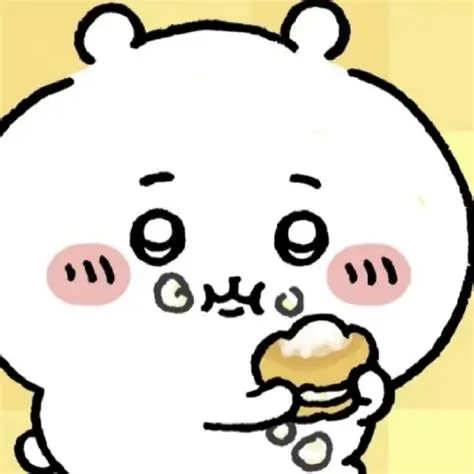

吉伊
- 角色形象：
吉伊是一只白色的小仓鼠，外表呆萌可爱，
圆滚滚的眼睛和毛茸茸的身体设计，使其形象十分讨喜。
- 性格特点：
吉伊性格内向，是个标准的i人，胆小爱哭，常被称作“爱哭鬼”，
但在朋友需要时会勇敢站出来，非常重情义。它还很依赖朋友，经常与哈奇、乌萨奇组队行动。
- 角色能力：
吉伊的武器是粉色的刺叉，平时靠除草采集和讨伐为生，目前在为了除草5级努力学习中。
- 主要经历：
吉伊住在抽奖中的白色房子里，它与哈奇、乌萨奇等朋友一起生活、工作，
在面对生活中的困难和怪物入侵时，逐渐变得坚强和勇敢。
